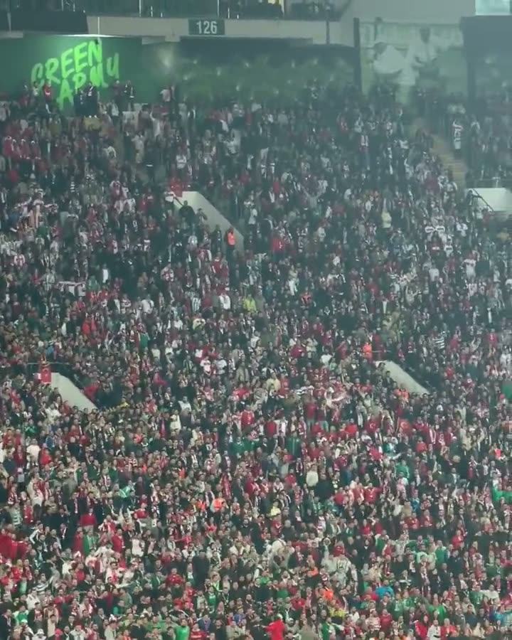

O Benfica não se explica. Vive-se.
Uma comunidade de adeptos e uma loja de peças originais, feitas uma a uma em Portugal, para quem vive isto dentro e fora do estádio.

os que vivem esta paixão.Dentro e fora do estádio
Peças para quem vive isto todos os dias.
Quatro peças disponíveis agora, por encomenda, e mais algumas em preparação. Sem carrinho: cada peça tem um botão de WhatsApp com a mensagem já escrita.

Um lugar que também é teu, estejas onde estiveres.
Não é preciso estar na Luz para estar na bancada. Basta sentir.
Há benfiquistas em todo o lado e nem todos cabem no estádio. Aqui partilham-se memórias, vota-se no que vem a seguir e criam-se peças pensadas para quem vive o clube todos os dias. Somos adeptos, não somos o clube.
Feito aqui, uma peça de cada vez.
Não há armazém nem stock. Cada peça nasce quando a pedes e passa pelas nossas mãos antes de chegar às tuas. Três técnicas, o mesmo cuidado.
Camada a camada
Canecas com copo de inox, porta-chaves e colecionáveis numerados. Cada caneca leva cinco a sete horas na impressora e é testada com água a ferver.
Disponível agoraVestir a paixão
T-shirts e sweats com estampas que aguentam lavagens sem rachar. Estamos a escolher o fornecedor e a testar amostras.
Em preparaçãoCanecas de todos os dias
Cerâmica branca com impressão a toda a volta, para ir à máquina e ao micro-ondas sem pensar.
Em preparaçãoMarca o teu lugar. É gratuito.
A lista de quem quer estar por dentro. Sem quotas, sem compromisso, sai quando quiseres.
- Participas na escolha das próximas peças, antes de irem para produção.
- Conheces os lançamentos e as edições numeradas antes de toda a gente.
- Recebes as novidades da comunidade: memórias, resultados das sondagens, bastidores.